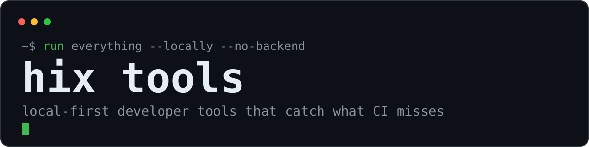
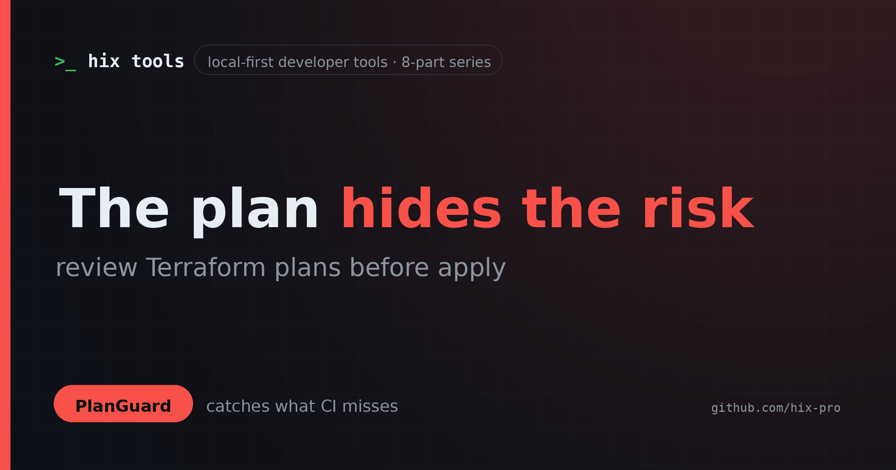

ActionLens
16 things to check in your GitHub Actions workflows
Triggers, token permissions, matrix size, script injection, and the checks that are easy to skip.
Local-first developer tools
Ten small tools — and one runner — that review the change before it merges: env drift, dangerous SQL, breaking contracts, workflow risk, Compose footguns, lockfile drift, Terraform plan risk, semver, repo momentum, and a coding agent in your pocket.
No backend. No account. No telemetry.

The runner
hix finds the tools you have installed, runs the checks in parallel, and gives you one table and one exit code. Missing tools are skipped, not faked. It never installs anything or phones home.
pipx install \git+https://github.com/hix-pro/hix.git
The suite
Paste a workflow to see the job graph, real matrix size, token permissions, risky triggers, run footprint, and a diff of two revisions.
Open demoDrop in a Compose file for a service graph, a plain-English risk review, and a diff of two revisions.
Open demoFind env vars that are missing, undocumented, unused, or hiding a committed secret — and document the gaps.
InstallFind SQL migrations across frameworks, then catch destructive statements, blocking DDL, and breaking renames.
InstallDiff OpenAPI and JSON contracts, classify what breaks, and fail CI only on the changes that matter.
InstallCompare TypeScript declarations and get the semver bump the change actually requires.
InstallCompare two lockfiles by package: upgrades, downgrades, checksum changes, and source drift.
InstallRank repositories by star velocity and breakout growth, not raw star count.
Open demoDrive a local OpenCode server from Telegram: streaming replies, approvals, sessions, and schedules. Source, systemd, or Docker.
InstallRead terraform show -json output before apply and flag what a plan diff hides: destroyed databases, public ingress, wildcard IAM, disabled encryption, and secrets in the plan.
Try it now
ActionLens and ComposeMap parse everything in the tab. Your workflow, compose file, and secrets never leave the browser.
In your CI
The CLIs ship prebuilt binaries for Linux, macOS, and Windows, plus composite GitHub Actions. JSON and Markdown output are built in.
$ hix check
$ envaudit scan .
$ migration-guard check
$ apiwatch check --fail-on-breaking
$ planguard review plan.json --fail-on error
$ typeshift compare ./types/v1 ./types/v2 --fail-on-breakingWriting

ActionLens
Triggers, token permissions, matrix size, script injection, and the checks that are easy to skip.

ComposeMap
Privileged containers, leaked secrets, host mounts, startup order, and the defaults worth changing.

PlanGuard
Stateful destroys, public ingress, wildcard IAM, disabled encryption, and secrets a plan diff treats equally.
Start here
Every tool is MIT-licensed, documented, and honest about what it cannot prove. Start with the one that matches your next production risk.